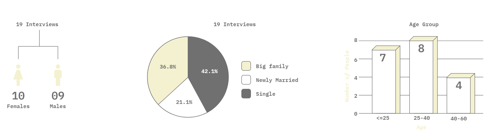
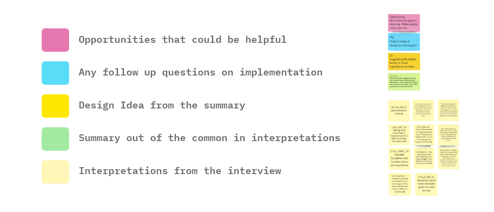
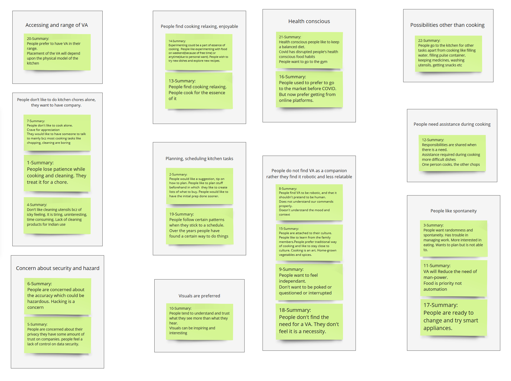
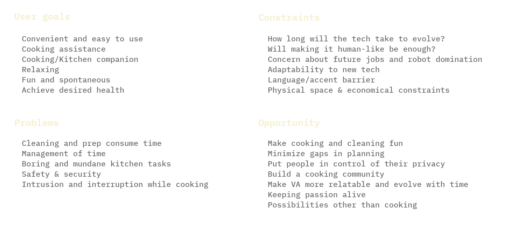

INITIAL BRIEF
An Indian kitchen equipment manufacturer makes mixer-grinders, food processors, microwave ovens and
electric stoves.
They have developed technologies to control each of these precisely. They now want to integrate these
into a single
product that can be controlled by voice.
They have approached you to design a voice-based user interface that will serve as a smart kitchen
assistant.
FOCUS OF CONTEXTUAL INQUIRY
- Acceptance & Usage of smart kitchen appliances
- Acceptance & Usage of VA
- Integration of VA
DEMOGRAPHICS

INTERVIEW SUMMARY
Summary of interview findings and how it has changed our focus:
- Majority of users don’t own smart kitchen appliance
- Majority have it (either on smartphones, or dedicate VAs like echo, alexa, gHome) but they don’t
use it because they
find it gimmicky and don’t know its possibilities.
- People feel VA will be intrusive.
- People do not trust VA with personal information
EVOLUTION OF FOCUS
- Making it economical
- When you have multiple smart devices(like an ecosystem) it will be more helpful.
- Need more skills in VA as the technology is in the early stages.
- VA should be more comfortable and understanding of human aspects.
AFFINITY
We conducted 19 interviews of 45 min to 1 hr of duration. For each of the interview we gathered around
50 insights.
Later we sat together as a team and interpreted each insight of each interview and categorised them in
one of these categories:
- DG - Demographics
- US - User Statement
- FQ - Followup Question
- IN - Insight
- CI - Cultural Insight
- BK - Breakdown
- OB - Observation
- DI - Design Insight
PARTS OF AFFINITY

Later we followed the bottomup approach to derive at summaries. For each of the summaries we have
generated
followup questions, design ideas and opportunities.
Below is the affinity we created:


GROUPING OF SUMMARIES
Here we have classified our affinity one level higher and grouped them several categories.

MOST IMPORTANT FINDINGS
- Accessing and range of VA
- People don’t like to do kitchen chores alone, they want to have company. Kitchen chores are
tiresome
- People find cooking relaxing, enjoyable and like to experiment
- Planning, scheduling kitchen tasks
- Health conscious
- Concern about security and hazard
- People need assistance during cooking (visuals, verbal prompts)
- People do not find VA as a companion rather they find it robotic and less relatable
- People like spontaneity in their daily schedule
AFFINITY ANALYSIS
